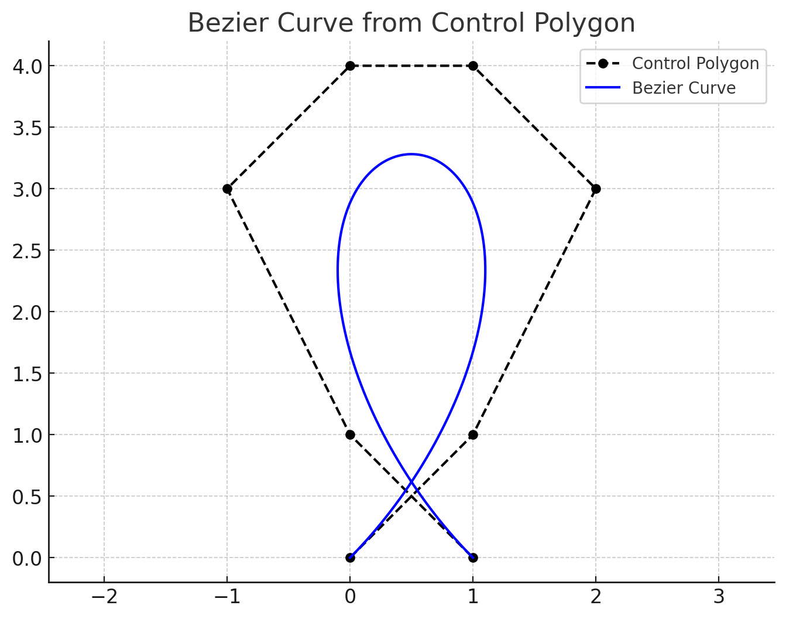

Dokumentacija za Domačo Nalogo 2
Funkcionalnosti paketa
Homework2.de_casteljau — Functionde_casteljau(points::Vector{Float64}, t::Float64) -> Float64Evaluates a 1D Bézier curve at parameter t using de Casteljau's algorithm.
Arguments
points: A vector of control point coordinates (e.g., all x-coordinates).t: The parameter value, typically in [0, 1].
Returns
- The value of the curve at
t.
Homework2.calculate_bezier_loop_area — Functioncalculate_bezier_loop_area(control_points::Vector{NTuple{2,Float64},t_start::Float64 = 0.0,t_end::Float64 = 1.0}) -> Float64Calculates the signed area of a loop for a Bézier curve using Green's theorem.
Arguments
control_points: A vector of 2D tuples(x, y)representing the control polygon.t_start: Start parameter (t-value) for integration. Default is 0.0.t_end: Končni parameter (t-vrednost) za integracijo. Default is 1.0.
Returns
- The signed area of the curve's loop.
Homework2.calculate_bezier_loop_area_auto_detect — Functioncalculate_bezier_loop_area_auto_detect(control_points::Vector{NTuple{2,Float64}}; kwargs...)Finds the self-intersection of a Bézier curve and calculates the area of the loop. This function first calls find_bezier_self_intersection to determine the intersection parameters t_start and t_end.
Arguments
control_points: A vector of (x, y) tuples representing the control points....: Keyword arguments to be passed tofind_bezier_self_intersection.
Returns
The area of the Bézier curve loop.
Homework2.find_bezier_self_intersection — Functionfind_bezier_self_intersection(control_points::Vector{NTuple{2,Float64}}; kwargs...) -> Tuple{Float64, Float64}Finds the self-intersection parameters (tstart, tend) of a Bézier curve. This uses a two-phase approach: a coarse search to find an initial guess, then refines it with Newton's method for solving systems of nonlinear equations.
Arguments
control_points: A vector of(x, y)tuples representing the control points.num_samples_coarse::Int=1000: Number of samples for the initial coarse search.max_newton_iter::Int=20: Maximum number of iterations for Newton's method.tolerance::Float64=1e-12: The convergence tolerance for Newton's method (based on the norm of the step).logging::Bool=true: A boolean to enable or disable logging output.
Returns
- A sorted tuple
(t_start, t_end)representing the parameter values at the point of self-intersection.
Throws
ArgumentError: If no plausible self-intersection is found in the coarse search.ArgumentError: If Newton's method fails to converge or if the Jacobian matrix becomes singular.
Homework2.bezier_loop_integrand — Functionbezier_loop_integrand(t::Float64, px::Vector{Float64}, py::Vector{Float64}, d_px::Vector{Float64}, d_py::Vector{Float64}) -> Float64Calculates the value of the integrand used to compute the area of a Bézier curve's loop at a given parameter t.
The area of a closed loop can be computed using Green's Theorem, where the integrand is given by (x(t)y'(t) - x'(t)y(t)).
Arguments
t: The parameter on the curve (typically between 0.0 and 1.0).px: The x-coordinates of the control points for the original Bézier curve.py: The y-coordinates of the control points for the original Bézier curve.d_px: The x-coordinates of the control points for the derivative Bézier curve (representing (x'(t))).d_py: The y-coordinates of the control points for the derivative Bézier curve (representing (y'(t))).
Returns
- The value of the integrand (x(t)y'(t) - x'(t)y(t)) at the given
t.
Homework2.integrate_gl_20 — Functionintegrate_gl_20(f::Function, a::Float64, b::Float64) -> Float64Calculates the definite integral of a function f over the interval [a, b] using 20-point Gauss-Legendre quadrature.
Arguments
f: The function to integrate. It should accept a singleFloat64argument.a: The lower bound of integration.b: The upper bound of integration.
Returns
- The approximate value of the definite integral.
Homework2.evaluate_bezier_2D — Functionevaluate_bezier(control_points::Vector{NTuple{2,Float64}}, t::Float64)Evaluates a 2D Bézier curve at parameter t using de Casteljau's algorithm.
Arguments
control_points: A vector of control point coordinates (e.g., all x-coordinates).t: The parameter value, typically in [0, 1].
Returns
- The value (x,y) of the curve at
t.
Homework2.derivative_control_points — Functionderivative_control_points(points::Vector{NTuple{2, Float64}})Calculates the control points for the derivative of a Bézier curve.
The derivative of a degree (n) Bézier curve is a Bézier curve of degree (n-1). This function computes the control points for that derivative curve.
Arguments
points: A vector of 2D tuples representing the control points of the original curve.
Returns
- A new vector of control points for the derivative curve.
1 Algoritem de Casteljau
Algoritem de Casteljau je stabilen in numerično robusten postopek za evalvacijo (in razbitje) Bézierjeve krivulje stopnje $n$.
Bézierova krivulja je podana parametriično s formulo:
\[\mathbf{B}(t)=\sum_{i=0}^{n}{n \choose i}(1-t)^{n-i}t^{i}\mathbf{P}_{i},\qquad t\in[0,1],\]
kjer so $\mathbf{P}_{i}$ kontrolne točke.
1.1 Rekurzivna interpolacija
Algoritem temelji na ponavljajoči se linearni interpolaciji med zaporednimi točkami:
\[\mathbf{P}^{(k)}_{i}(t)=(1-t)\,\mathbf{P}^{(k-1)}_{i}(t)\;+\;t\,\mathbf{P}^{(k-1)}_{i+1}(t),\quad k=1,\dots ,n,\]
pri čemer $\mathbf{P}^{(0)}_{i}=\mathbf{P}_{i}$. Po $n$ korakih ostane ena sama točka $\mathbf{P}^{(n)}_{0}(t)=\mathbf{B}(t)$.
1.2 Implementacija
V funkciji de_casteljau(points, t) se:
- Kopira vhodni vektor koeficientov (1D projekcija),
- izvede zgornja interpolacija v dveh gnezdenih zankah,
- Vrne položaj Bézierove krivulje $B(t)$ v $t$.
Zahvaljujoč zgolj seštevanju in množenju z realnimi števili je algoritem brez problemov z nestabilnostjo, ki pestijo direktno evalvacijo Bernstein-ove vsote za večje $n$.
2 Ploščina zaprtih Bézierjevih zank
2.1 Greenova formula
Naj bo $\mathbf{r}(t)=(x(t),y(t))$ gladka, zaprta krivulja z $t\in[0,1]$. Greenova formula poda ploščino
\[A=\frac12\oint_{\mathbf{r}}\bigl(x\,dy-y\,dx\bigr)=\frac12\int_{0}^{1}\!\bigl[x(t)\,y'(t)-x'(t)\,y(t)\bigr]\,dt.\]
Za Bézierjevo krivuljo dobimo polinom stopnje $n-1$. Integral torej lahko izračunamo eksaktno z Gauss–Legendrejevo kvadraturo. V nalogi uporabimo 20-točkovno kvadraturo, ki omogoča zadostno natančnost.
2.2 Koraki funkcije calculate_bezier_loop_area
Ločimo koordinate kontrolnih točk v vektorja
px,py: Bézierova krivulja je parametrična krivulja, kjer vsaka točka $(x(t), y(t))$ izhaja iz ločenih Bernstein-ovih polinomov za $x$ in $y$ koordinate. Zato moramo kontrolne točke ločiti v dva vektorja za neodvisno evalvacijo.Izračunamo kontrolne točke odvodov $x'(t)$ in $y'(t)$: Odvod Bézierove krivulje stopnje $n$ je Bézierova krivulja stopnje $n-1$ s kontrolnimi točkami: $\mathbf{P}'_{i}=n\bigl(\mathbf{P}_{i+1}-\mathbf{P}_{i}\bigr)$ To izhaja iz odvoda Bernstein-ovih polinomov (vir).
Preslikava vozlišč Gauss-Legendre kvadrature: Standardna Gauss-Legendre kvadratura je definirana na intervalu $[-1, 1]$. Za integracijo na intervalu $[a, b]$ uporabimo linearno preslikavo: $t = \frac{b-a}{2}\xi + \frac{a+b}{2}$ kjer je $\xi \in [-1, 1]$ standardno vozlišče. V našem primeru je $a = t_{start}$ in $b = t_{end}$.
Evalvacija integranda: Za vsako preslikano vozlišče $t_k$ ovrednotimo integrand: $f(t_k) = x(t_k)\,y'(t_k) - x'(t_k)\,y(t_k)$ z uporabo
de_casteljaualgoritma.Končni izračun: Seštejemo $w_k f(t_k)$ (kjer so $w_k$ uteži kvadrature) in pomnožimo s skalacijskim faktorjem $\frac{b-a}{2}$ ter z $\frac{1}{2}$ iz Greenove formule.
2.3 Avtomatska detekcija zanke in izračun ploščine
Funkcija calculate_bezier_loop_area_auto_detect samodejno najde točko samopresečišča Bézierjeve krivulje in izračuna ploščino nastale zanke. Postopek poteka v dveh fazah:
2.3.1 Grobo iskanje samopresečišča
- Vzorčenje krivulje: Krivuljo vzorčimo z 1000 enakomerno razporejenimi točkami na intervalu $[0, 1]$.
- Iskanje najbližjih točk: Poiščemo par točk $(t_1, t_2)$ z minimalno razdaljo, kjer je $|t_1 - t_2| > 0.1$ (da ne primerjamo sosednjih točk).
- Preverjanje: Če ni najdenega para, funkcija vrže izjemo (krivulja nima samopresečišča).
2.3.2 Natančno iskanje z Newtonovo metodo
- Začetni približek: Uporabimo $(t_1, t_2)$ iz grobe faze kot začetni približek.
- Newtonova metoda: Rešujemo sistem dveh nelinearnih enačb $B(t_1) = B(t_2)$, kjer $B$ je Bézierjeva krivulja. V vsaki iteraciji izračunamo razliko in Jacobijevo matriko ter posodobimo $(t_1, t_2)$.
- Konvergenca: Postopek se ustavi, ko je norma koraka manjša od tolerance (privzeto $10^{-12}$) ali ko presežemo maksimalno število iteracij (privzeto 20).
- Izjeme: Če Jacobijeva matrika postane singularna ali metoda ne konvergira, funkcija vrže izjemo.
2.3.3 Izračun ploščine zanke
Ko imamo točki samopresečišča $(t_{start}, t_{end})$, izračunamo ploščino zanke z integracijo Greenove formule na intervalu $[t_{start}, t_{end}]$: $A = \frac{1}{2}\int_{t_{start}}^{t_{end}} \bigl[x(t)\,y'(t) - x'(t)\,y(t)\bigr] \,dt$
3 Konkreten primer uporabe
3.1 Opis primera
Razmislimo o Bézierjevi krivulji stopnje 7, definirani z naslednjimi kontrolnimi točkami:
CONTROL_POLYGON = [
( 0.0, 0.0), # P₀ - začetna točka
( 1.0, 1.0), # P₁
( 2.0, 3.0), # P₂
( 1.0, 4.0), # P₃
( 0.0, 4.0), # P₄
(-1.0, 3.0), # P₅
( 0.0, 1.0), # P₆
( 1.0, 0.0) # P₇ - končna točka
]Ta kontrolni poligon definira krivuljo, ki se sama sebe preseka in tvori zanko. Na sliki spodaj je prikazana Bézierova krivulja (modra črta) z označenimi kontrolnimi točkami (rdeče točke) in kontrolnim poligonom (črtkana črta).

3.2 Avtomatska detekcija samopresečišča
Ko pokličemo funkcijo calculate_bezier_loop_area_auto_detect, algoritem:
- Najde samopresečišče: Algoritem je uspešno zaznal točko samopresečišča pri koordinatah $(0.5, 0.616)$
- Določi parametre: Najdeni parametri so $t_1 = 0.075$ in $t_2 = 0.925$
- Izračuna ploščino: Ploščina zanke je $A = 2.254$ kvadratnih enot
area = calculate_bezier_loop_area_auto_detect(CONTROL_POLYGON)
# Izpis algoritma:
# Coarse search found initial guess: t1 ≈ 0.07507507507507508, t2 ≈ 0.924924924924925
# Newton's method converged in 3 iterations.
# Detected intersection point: (0.4999999999999998, 0.61629577928722)
# Final parameters: t1 = 0.0750643505886663, t2 = 0.9249356494113337
#
# --------------------
# Calculated area: 2.253709530172552
# --------------------3.3 Geometrijska interpretacija
Na sliki lahko vidimo, da:
- Kontrolni poligon (črtkana črta) povezuje kontrolne točke $P_0$ do $P_7$
- Bézierova krivulja (modra črta) se gladko prilega kontrolnemu poligonu
- Samopresečišče se nahaja približno na koordinatah $(0.5, 0.616)$, kar se ujema z rezultatom algoritma
- Zanka je območje, ki ga omejuje krivulja med parametroma $t_1 = 0.075$ in $t_2 = 0.925$
Algoritem je uspešno zaznal, da se krivulja sama sebe preseka pri parametru $t \approx 0.075$ in ponovno pri $t \approx 0.925$, kar ustvarja zaprto zanko s ploščino $2.254$ kvadratnih enot.